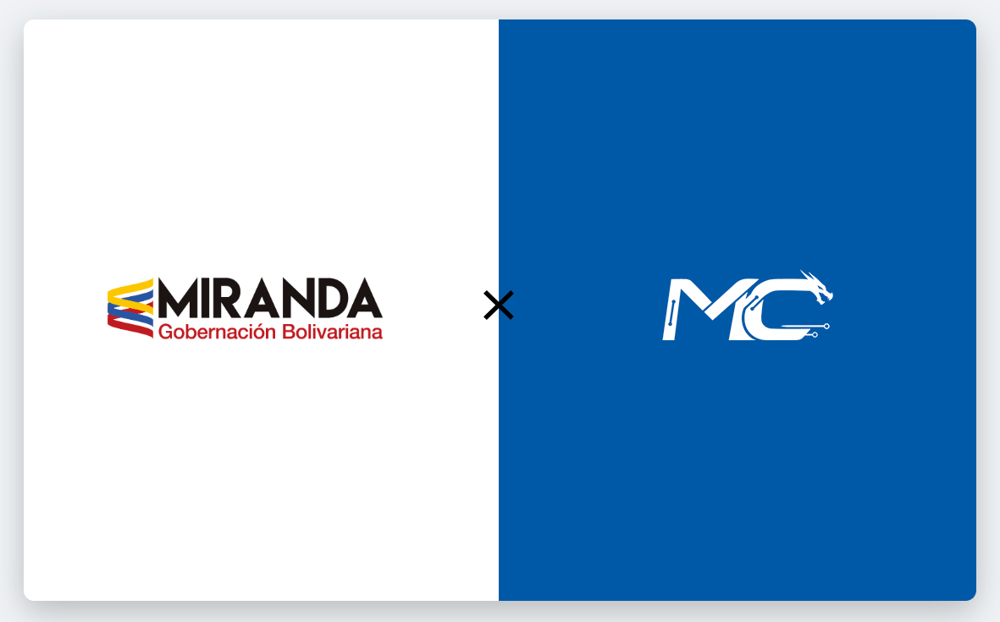
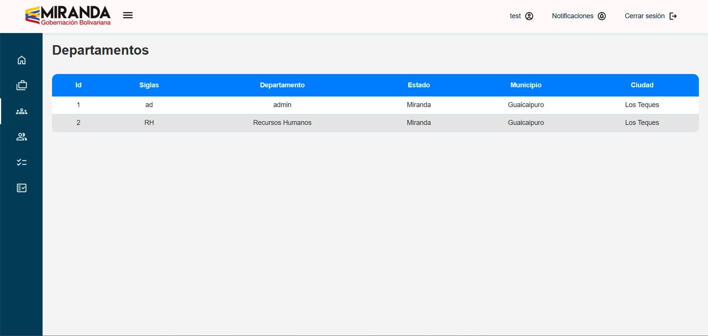
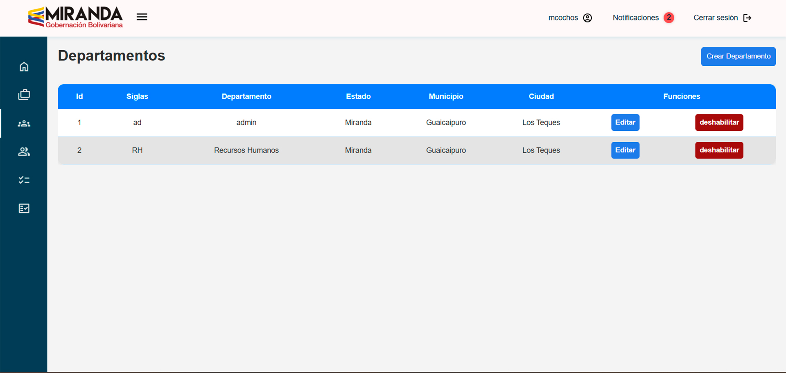
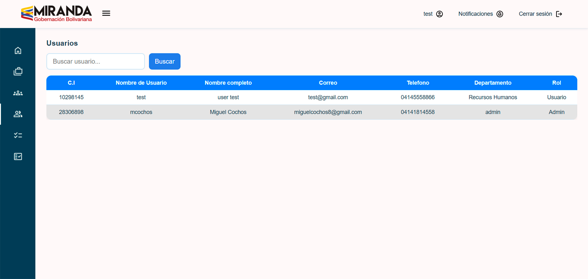
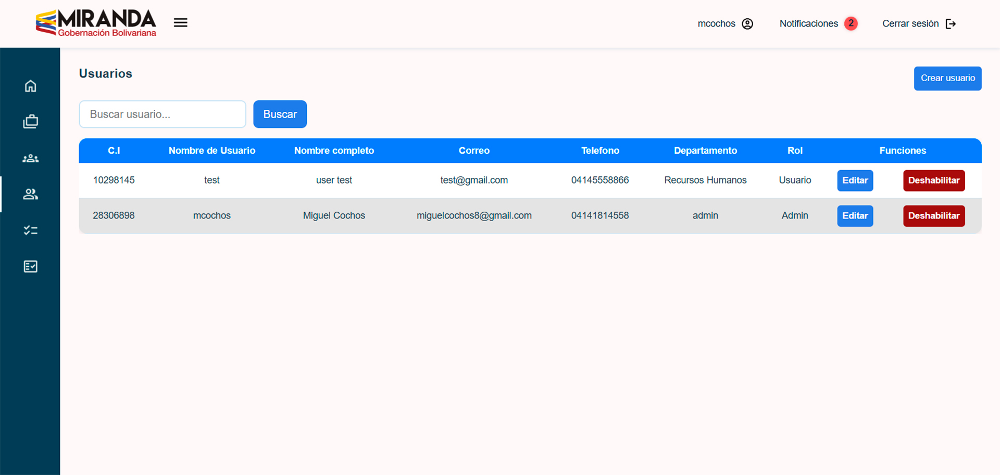
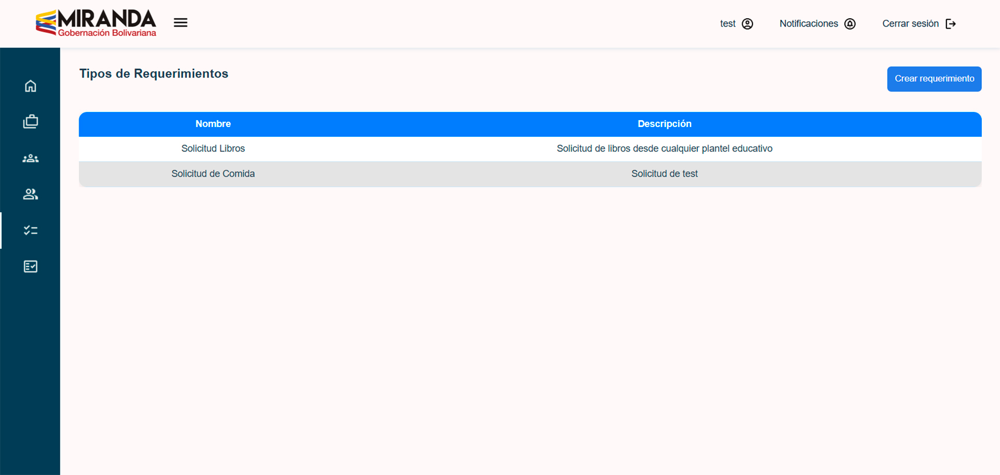
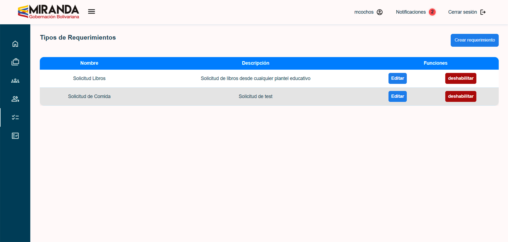
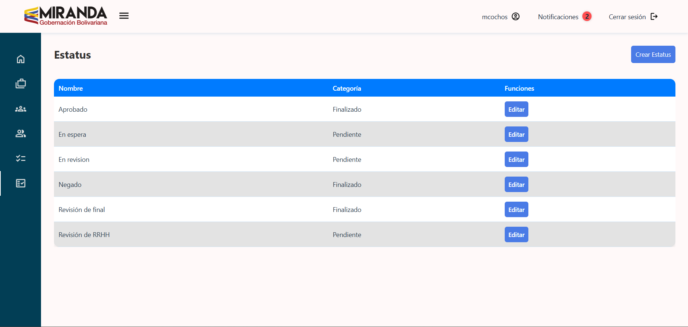

eGobMail
Es una plataforma de control de correspondencia segura y confiable para el Gobierno del Estado de Miranda, diseñada para facilitar la comunicación entre los servidores públicos.

Inicio de sesion
Este módulo gestiona el acceso seguro al sistema eGobMail mediante autenticación de credenciales. Valida rigurosamente usuarios y contraseñas contra la base de datos de la gobernación, previniendo accesos no autorizados y asegurando rutas privadas. Esto garantiza la integridad de la información gubernamental y la trazabilidad de cada servidor público.
Alertas de inicio de sesión
Contraseña incorrecta
Usuario no encontrado o deshabilitado
URL protegidas
Panel Inicial
El Dashboard principal proporciona una visión consolidada e indicadores clave del rendimiento operativo de la gobernación en tiempo real. Ofrece a los usuarios un acceso ágil a los módulos críticos y resúmenes estadísticos sobre el flujo de correspondencia entrante y saliente, optimizando la toma de decisiones y facilitando la priorización de tareas diarias en la gestión pública.
Panel de Administración de Departamentos
Módulo centralizado para estructurar y organizar la gobernación. Los administradores disponen de privilegios exclusivos CRUD para registrar nuevos departamentos, editar detalles y deshabilitar áreas inactivas para mantener la coherencia organizativa. Los usuarios de nivel estándar pueden consultar la lista de dependencias habilitadas para direccionar correspondencias, facilitando la comunicación interdepartamental fluida.
Admin
Normal


Funcion para crear departamentos
Funcion para editar departamentos
Funcion para deshabilitar departamentos
Panel de Administración de usuarios
Módulo de gobernanza que centraliza el control de acceso de los servidores públicos. Permite a los administradores crear, modificar y deshabilitar cuentas y asignar roles. Incluye filtros de búsqueda avanzada por nombre, cédula o departamento, garantizando una administración segura, transparente y segmentada según el nivel de responsabilidad institucional.
Admin
Normal


Función para crear usuarios
Función para editar usuarios
Función para deshabilitar usuarios
Función para buscar usuarios
Panel de Administración de Requerimientos
Facilita la estandarización y control de las solicitudes oficiales dirigidas a la gobernación. Los administradores gestionan el catálogo de tipos de requerimientos, con facultades para crear, actualizar y deshabilitar categorías operativas. Este control centralizado asegura que la correspondencia entrante sea clasificada de manera uniforme, agilizando los tiempos de respuesta interna.
Admin
Normal


Función para crear requerimientos
Función para editar requerimientos
Función para deshabilitar requerimientos
Panel de Administración de Estatus
Permite parametrizar las distintas etapas del ciclo de vida de los trámites. Los usuarios autorizados pueden registrar nuevos estatus y editar descripciones para reflejar con precisión el progreso de la correspondencia institucional. Este módulo aporta transparencia operacional y facilita la medición del desempeño de los flujos de trabajo en cada departamento.

Función para crear estatus
Función para editar estatus
Panel de Administración de Correspondencia
El núcleo de eGobMail. Este módulo permite registrar, editar y realizar el seguimiento en tiempo real (tracking) de la correspondencia interna y externa de la gobernación. Cuenta con motores de búsqueda avanzada por remitente, fecha o código, además de opciones de exportación individual o masiva a formatos portables, garantizando la trazabilidad documental.
Vista general de la correspondencia
Funcion para cargar la correspondencia
Funcion para editar la correspondencia
Funcion para exportar una correspondencia
Funcion para exportar todas las correspondencias
Funcion de busqueda avanzada para la correspondencia
Funcion para el rastreo de la correspondencia
Panel de Notificaciones
Centro de mensajería instantánea que alerta a los servidores públicos sobre correspondencia asignada, cambios de estatus y requerimientos urgentes. Con una interfaz dinámica y no intrusiva, proporciona actualizaciones inmediatas sobre eventos críticos del flujo de trabajo, lo que minimiza cuellos de botella y mejora la coordinación operativa interdepartamental.
Perfil de Usuario
Espacio individualizado para que cada servidor público consulte su información de registro y rol asignado dentro de la gobernación. Permite la actualización segura de datos y la autogestión para el cambio de credenciales de acceso, robusteciendo la política general de seguridad informática del sistema eGobMail.